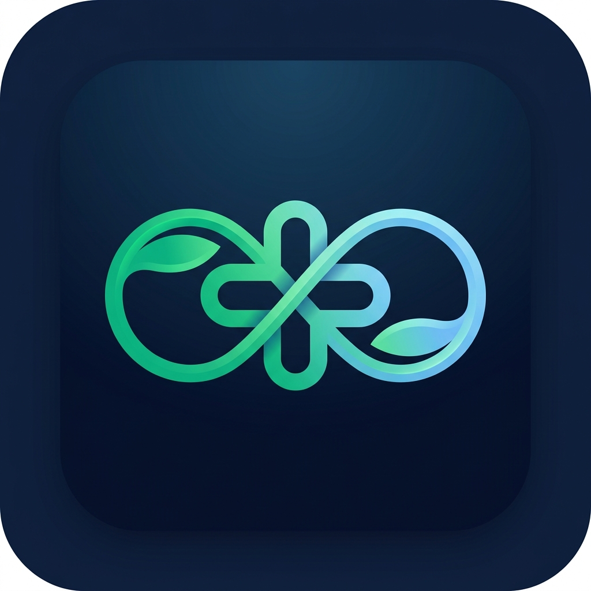

Health Tracker
Táplálkozási pontszám és változatosság AI Coach-al
Egészségügyi Pontszámok
0
Napi Pont
0
Heti Pont
0
Havi Pont
0
Éves Pont
Változási Index (Progress Score)
50
Változási Index
Trend: Stabil
Stabilitás (σ): 0
Δ (7-30 nap): 0
WDMS pontozás: Az ételek minőségi súlya (MIND diéta) alapján kalkulált 100-as érték. A Változási Index a mozgóátlagok és kilengések (szórás) alapján jelzi a fejlődésedet.